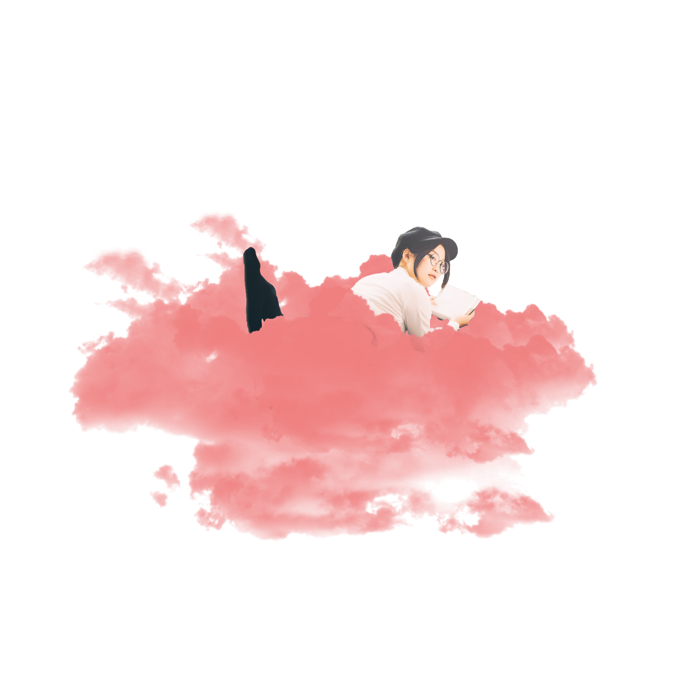

Astuces
Découvrez ici quelques astuces pour mieux dormir.
Si vous n'arrivez pas à dormir, levez-vous !!!
Le fait de rester allongé ne fait que vous stresser et complique encore un peu le processus d’endormissement. Il est conseillé de sortir du lit pour faire autre chose, de faire quelque chose de relaxant, pas de lumière forte. Puis retentez d’aller vous coucher.
Couper les écrans !!
Télévision, ordinateur, smartphone diffusent une lumière bleue très excitante, proche de la lumière du jour.
écoutez les signaux de sommeil.
C’est-à-dire que quand vos yeux commencent à cligner, à bâiller et avoir les paupières lourdes. C’est que c’est le bon moment pour aller dormir, car votre horloge interne apprécie les rythmes de sommeil réguliers. écoutez votre corps plus que votre tête.
Adopter des horaires de sommeil régulier
Se lever tous les jours à la même heure, même les week-ends, vous permettra de garder le même rythme de sommeil

Les classiques
évidemment il est clair qu’il est déconseillé pour un bon sommeil de ne boire ni du café, ni du thé, ni de faire du sport juste avant d’aller vous coucher, ni de prendre un boisson avec beaucoup de sucre.